WE ARE DOKKAN!!!!
Só pra constar, esse é o melhor aniversário da história, sim, é só que a completa falta de informação da junção das versões deixa tudo muito engraçado
Enfim, a melhor celebração de todas facilmente, o aniversário mais hype, mais impressionante e com muita novidade boa pro jogo, só coisa boa ein
^ Sumário (clique para ir a qualquer um dos tópicos)
Vai ter rap no aniversário também? Perfeito.
Bom, isso não é bem um rap, na verdade é tipo uma "releitura" (?) de uma dança do Japão chamada Sōran Bushi
Eu achei a ideia interessante, até pq na canção original eles mencionam uma palavra que soa muito como "Dokkan", então combinou perfeitamente
Simplemente o inicio mais brabo possível pra uma celebração.
GOGETA BLUE
O cara é praticamente intocável e ainda sim stacka DEF, goat.
O Gogeta é um card "faz-tudo", ele tem todas as mecânicas de hidden potential e ainda é um orb changer lendário, que personagem incrível
Pra começar, o Gogeta é um líder de 200% pra Movie Heroes, então o cara é brabo mesmo
E por sinal, o Gogeta tem defesa ativa por 3 turnos pra ajudar ele no começo da luta, o que já é ótimo
Ele stacka 30% de DEF no Ultra Super Attack, mas como eu disse, ele tem muito desvio transformado, fica meio desnecessário o stack
E esse cara também é efetivo contra tudo permanentemente, o que ajuda muito o dano dele
Bom, o Gogeta muda aleatoriamente orbs que não sejam PHY pra rainbow, o que é maravilhoso já que ele não sofre por Ki, então o time inteiro se beneficia disso
Ele lança um adicional com 70% de ser um Super Attack, e precisando pegar só um único rainbow orb, ele lança um Super Attack adicional garantido também
Com esses adicionais e o hidden potential, o Gogeta pode dar 4 supers num turno e cada super aumenta o ATK e DEF em 50% no turno, então ele com certeza não vai tomar muito dano nesse começo de luta
Bom, de início, é só isso, o Gogeta é bem simples, ele vai ficar tranquilo até o turno onde ele se transforma
E falando em transformação.. essa deu medo
O Gogeta se transforma a partir do turno 4, mas não do turno 4 da luta e sim o quarto turno dele (é similar a condição do Vegetto Blue AGL, mas sem a condição de HP podre junto)
Não é uma condição ruim não, já que é só dar float nele no turno q ele aparecer e quando ele voltar, pronto, ele já pode transformar
Como a defesa ativa dele acaba depois de 3 turnos, é bem arriscado ficar stackando mais, até pq não faz tanta diferença, então só transforme assim que puder
O segundo Mr. Dokkan Original, mas melhor, e em pessoa.
O Gogeta mantém algumas coisas que ele já tinha, como o orb change e ser efetivo contra tudo, só que ser efetivo vai ser inútil daqui um momentinho..
Agora o Gogeta lança 1 super adicional garantido e lança outro pegando 1 rainbow orb, bem balanceado isso aí
Mas as grandes mecânicas do Gogeta é que por 4 turnos ele cura 54% de HP (pq sim, nem tem motivo pra isso), e ter 70% de chance de desvio, que obviamente faz dele um personagem quebrado considerando o tanto de coisa que ele já faz
E agora o dano do Gogeta fica absurdo, já que cada desvio que ele fizer dá 20% de chance de crítico, e essa chance não tem limite, então o Gogeta dá crítico garantido infinito depois de desviar 5 vezes
Ah, por sinal, esse cara tem um Ultra Super Attack com animação original e que aumenta 100% de ATK por 4 turnos, então o dano já é alto no primeiro turno dele, e no turno seguinte, fica ainda mais absurdo
E se tudo isso não parece suficiente, tem mais.
O Gogeta tem a nova mecânica de atração de ataques na Active Skill dele, e mlk, que Active desbalanceada
O Gogeta dá um dano do caramba no inimigo (provavelmente vai ser crítico), atraí TODOS os ataques no turno pra ele e desvia garantido, personagem desbalanceado demais cara
Essa Active skill basicamente impede o boss de fazer qualquer coisa, mas tem alguns limites
- Ataques em área ignoram essa atração, eles ainda vão pegar no time inteiro
- O Gogeta é um personagem de desvio, se o boss nulificar desvio, o Gogeta vai atrar todos os ataques pra si e morrer né, toma cuidado
Obviamente essas limitações não impedem o Gogeta de ser um top tier facilmente, e ele realmente é um card genial
OSTs incríveis, Kit muito forte e fácil de entender, protege o time, e animações lindas
E quer saber de uma coisa? Esse cara tem 70% de chance de counterar supers de Ki e..
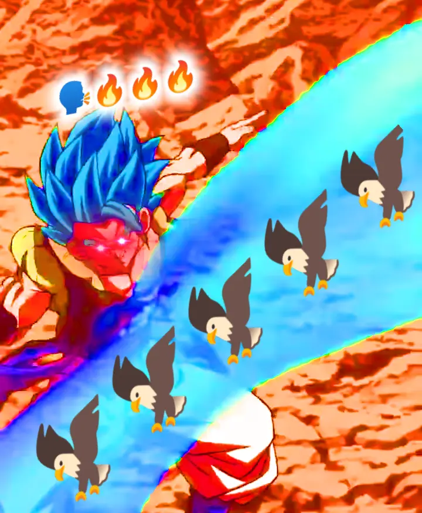
RAAAAAAHHHH MUDADA!! 🦅🦅🦅🦅🦅🦅🦅🦅
BROLY FULL POWER
O N.1 por 2 semanas, mas ainda assim, o N.1.
O Broly é simplesmente uma máquina de dano e defesa, o cara tem vários adicionais e stacka ainda.. só vai se ligando..
Pra começar, ele tem defesa ativa permanente, então ele já tem a capacidade de tankar bem
Ele também é lider pra Super Bosses, mil vezes melhor que o Goku Black Rosé PH-
Falando dos Super Attacks dele, ele stacka 50% de ATK pra sempre e ganha 30% de DEF por 4 turnos no Ultra Super Attack, e no Super Attack normal, stacka 30% de ATK e ganha 30% de DEF no turno, o que faz dele um card bem similar aos GT Boys do ano passado, já que eles focavam bastante no ATK
Bom, o Broly tem a animação de intro mais pesada do jogo inteiro (demora um 5 segundos pra carregar o negócioKKKKK) e por 4 turnos lança um Super Attack adicional garantido
Não só isso, mas caso ele estiver no slot 1 ou 2, ele lança outro Super Attack adicional, e caso ele esteja no slot 3, ele lança um Super Attack adicional e outro adicional com 50% de chance de ser um Super Attack
Então é, o foco dele é dar o máximo de supers possível e stackar muito
Algo que eu prefiro muito mais nesse cara é que ele é muito mais confiável que os GT Boys por exemplo, já que ele tem muito mais coisas garantidas sem nenhuma condição de Ki, o que é ótimo
E a forma base dele é basicamente só isso, ele dá muito dano e, graças a defesa ativa, consegue tankar bem de boa
Agora vem a transformação dele.. hmm..
Bom, o Broly tem a condição de transformação meio podre infelizmente, já que ele pode se transformar a partir do turno 5, mas é o quinto turno dele e não o quinto turno da batalha, e diferente do Gogeta, não dá pra só dar float nele e no turno seguinte já transformar
Infelizmente leva um tempinho pro monstro sair, até pq algumas vezes as lutas acabam antes do Broly ter a chance de se transformar
Mas caso ele consiga..
Pode fazer uma pausa, tomar um café, fazer uma caminhada, dar uma volta na cidade toda, e esse cara ainda vai estar mandando adicionais..
Antes de falar qualquer coisa sobre o kit desbalanceado desse cara, tenho que mencionar que, ao se transformar o Broly cria um domínio muito forte por 4 turnos, dando 4 de Ki e 10% de ATK e DEF pra aliados e inimigos Extreme Class, e mais 10% caso eles sejam Movie Bosses ou Exploding Rage
Pra completar, enquanto o domínio estiver ativo, o Broly ganha 26% de redução de dano antes de atacar, e aliados e inimigos Super Class recebem 10% de dano a mais
Então é, o cara buffa muito o time, é provavelmente o domínio mais forte do jogo (no Global né), com uma das melhores OSTs do jogo inteiro
A OST do cara começa como a de um vilão, mas muda de tema logo depois já que o Broly não é do mal
E o som do Ki carregando de fundo é genial, simplesmente peak.
Falando sobre o próprio Broly, ele vira uma verdadeira máquina de dano e acabou
O cara vai meter um Ultra Super Attack de 25 milhões, e logo depois vai mandar um Super adicional garantido, e caso cê esteja com 24 de Ki, ele lança outro Super adicional, e ele vai lançar mais outro Super adicional de graça, será que é suficiente?
Só pra constar, no Ultra Super Attack ele ganha 26% de chance de crítico, e no Super Attack normal ele ganha mais 26%, então o cara vai dar um dano absurdo, critando, e tendo uma defesa muito braba
O Broly tem a mecânica de ganhar 50% de DEF multiplicativa quando ele for receber um ataque, então a defesa dele antes de atacar é ok, e depois de atacar 300 vezes, ele vira uma parede, já que ele continua com defesa ativa
É basicamente isso, o Broly é decente na forma base, mas transformado ele se torna um monstro, o cara é o mais puro dano e destruição
Quer um fato curioso? Esse cara compartilha 5/7 links com o Goku SSJ4 INT LR, use essa informação como preferir.
GOLDEN FREEZA INT
UM PERSONAGEM SECUNDÁRIO DE ANIVERSÁRIO BOM?????? COMO ASSIM?????????
O Freeza é um tank e suporte pra Super Bosses, e que suporte incrível mlk
Pra começar, levando ou desviando de 1 golpe o cara dá crítico garantido já, e isso é o começo
No turno 1 o Freeza simplesmente tem 60% de redução de dano, e nos turnos seguintes, ela vai ficando um pouco restrita..
No turno seguinte, a redução cai pra 50% e só fica disponível se ele pegar 3 orbs, o que é aceitável
Após isso, a redução cai pra 40% com 3 orbs pegos, e não diminui depois disso, então pelo menos ele não vira farofa depois de um tempo igual ao Golden Freeza LR
E caso todos aliados no turno sejam Super Bosses, ele ganha 20% de redução de dano em cima de tudo já mencionado, então ele realmente é uma parede
Normalmente só redução de dano pura não é tão boa, mas esse cara pelo menos consegue manter a redução dele alta, e por ser um vilão e ter o papel de ser um floater, esse cara não vai estar tanto nos turnos, então você não vai acabar ficando maluco por causa dos orbs dele e etc
Enfim, ele dá 60% de ATK e 30% de DEF pra Super Bosses, então o cara realmente é a ajuda perfeita pro time do Broly
Quem diria né? Ainda me surpreende que até os personagens secundários do aniversário tiveram atenção dessa vez
O EZA do Gogeta do Nono Aniversário
Tá ai uma anomalia braba: Um card sem SSR mas com EZA.
Esse Gogeta é só um card colecionável, então ele não é necessariamente forte
Ele é um nuker básico, ganhando 19% de ATK e DEF por orb pega, e caso tenha um aliado Movie Heroes ou Super Heroes, aumenta pra 28%
Ele fica super efetivo caso você pegue 5 orbs, e dá crítico garantido se você de algum jeito pegar 9 orbs, que eu acho bem difícil, já que esse cara não tem orb change
Acho q o mais interessante desse card (além da arte linda), e o fato de ele "stackar desvio" no Super Attack
Cada Super Attack que ele fizer aumenta a chance de desvio dele por 19% no turno, que é uma mecânica super básica e bem nada demais por enquanto, mas que pode ser muito forte se for colocada em cards futuros
Em geral, cardzinho bonito
Por sinal, eu acho genial o Shenlong no fundo formar o número 9 ao invés de eles usarem as esferas do dragão como sempre fazem.
EZA do Broly, Cheelai e Lemo LR
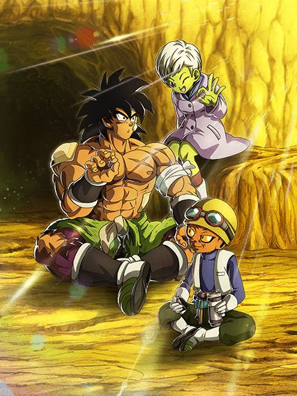
Estão atrasados. (?????)
Por algum motivo os jogadores do Global sofreram um efeito mandela bizarro onde o EZA desses caras tinha sido muito atrasado sendo q só demorou 1 dia a mais doq o esperado, vai entender..
Bom, eles tem um monte de buffs engraçados e fortes mas o objetivo com eles segue o mesmo que eles tinham antes do EZA: Pegar 7 orbs pra ter desvio garantido.
Na minha mais honesta opinião, eu não gosto desses caras, mas eles são uma opção bem importante pra Super Bosses então.. fazer o que né
Além de obviamente a passiva de nuke deles ter sido aumentada de 15% pra 30% de ATK e DEF por orb pega, eles também ganharam um buff na mecânica de orbs deles
Além de eles agora darem 2 de Ki pra todos aliados independente de que orbs você pegar na luta (TEQ ou INT = 39% de DEF, STR ou AGL = 39% de ATK), eles dão mais 15% de ATK e DEF caso você pegue 1 rainbow orb, o que faz deles um suporte muito forte
E tem mais: Eles tem o raro suporte de redução de dano
Se eu não me engano, eles são o primeiro card desde o Gokuzinho PHY de 2023 que dá redução de dano pros aliados, e é algo bem fácil, já que tendo 24 de Ki, eles lançam um Super Attack adicional e dão 10% de redução de dano pra Super Bosses e Movie Bosses
E aí começam os problemas desses caras.. vamo lá
Eles mudam orbs aleatoriamente pra PHY quando estão abaixo de uh.. 60% de HP.. é bastante coisa né? Bem inconsistente
E tem uma mecânica engraçada: Eles mudam TODOS os orbs pra PHY se seu HP estiver abaixo de 39%
Obviamente isso só ativa 1 vez por partida, mas ainda sim, é engraçado ver o dano potencial máximo deles
Mas então uh.. você deve ter notado que apesar de tudo q eu mencionei acima, tá faltando uma coisa, que é os "7 orbs pra ter desvio garantido"
Então.. se você não estiver nessas condições de HP bem absurdas, esses caras não tem orb change nenhum e isso resulta em não conseguir os 7 orbs várias vezes
Graças ao EZA, esses caras agora tem 50% de chance de desvio incondicional, o que é muito bom, mas não é confiável né
Essa é a grande falha desse card, eles não terem nenhuma forma de orb change sendo que Super Bosses tá lotado de personagens que precisam de orbs
Como a lenda DaTruthDT mencionou recentemente, usar esse card é como jogar um "cara ou coroa"
Ou você consegue os 7 orbs toda vez e esses caras dominam a partida, ou eles vão ser a causa de você perder 90% das vezes.
EZA do Broly e Paragus
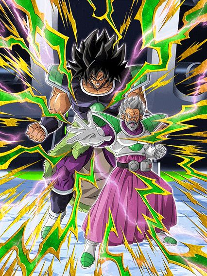
Eles tem 2 categorias.
Sabe, é triste, mas também é muito engraçado, esses caras tão em Pure Saiyans e Joined Forces, cabou
Esses caras são extremamente similares a Mai STR da celebração de downloads do ano passado, já que o objetivo deles é dar pelo menos 2 supers
Cada Super Attack deles dá 26% de redução de dano no turno, então pelo menos 2 já são 52%, o que é decente
Junta isso com o fato de eles terem 50% de chance de dar um Super adicional incondicional e outros 50% caso tenha um inimigo Pure Saiyans, e você tem de resultado 78% de redução de dano (caso você dê o super do Hidden Potential, esses caras tem mais de 100% de redução de dano, então eles essencialmente ficam invencíveis)
Mas claro, isso só se as estrelas do universo inteiro se alinharem, pq em geral esses caras só vão ter um adicional mesmo
Eles também stackam 30% de DEF no super, que ajuda eles a tankarem até bem com esses adicionais
Então, é, eles são um ótimo suporte pra personagens como o novo Broly LR por exemplo, mas o simples fato de eles não terem times faz com que eles sejam inúteis
Simplesmente não tem onde usar eles
EZA do Bardock e Gine
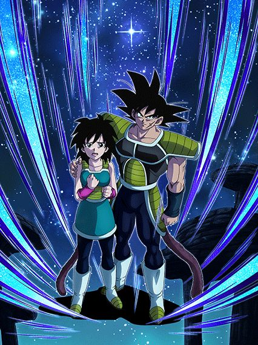
Suporte.
O EZA não mudou muito eles não, eles seguem sendo um suporte, mas agora eles conseguem tankar relativamente melhor
Além de as porcentagens q eles já tinham na passiva terem sido aumentadas, o buff mais relevante que eles receberam foi de ter +122% de ATK e DEF tendo outro Bond of Parent and Child no turno, que é algo bem fácil né
Tirando isso, outro buff relevante foi no Super Attack deles, já que agora ele aumenta o ATK e DEF em 100% no turno e ainda dá 22% de ATK e DEF pra todos aliados por 2 turnos, e suporte de múltiplos turnos é sempre bom, não dá pra negar
Infelizmente eles ficam só nisso mesmo, sem defesa ativa, redução de dano ou desvio
Eles realmente tem o único propósito de ajudarem o time e talvez sobreviver a alguns ataques básicos.
World Tournament n.51
WORLD TOURNAMENT NO ANIVERSÁRIO??
HAHAHAHAHA QUE LEGAL EU AMO O WORLD TOURNAMENT
EZA do Tenshinhan INT
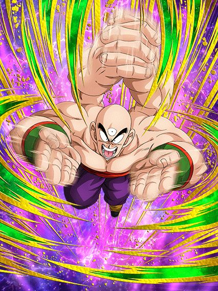
Imagine o Goku Black Rosé PHY, mas ele não é o Goku Black, e também não é PHY.
Esse Tenshinhan se baseia só em adicionais, e é essa a passiva dele
Ele lança 2 adicionais que tem 70% de chance de serem Super Attacks, lança um Super adicional toda vez que atacar 4 vezes, e lança outro Super adicional se tiver um inimigo Turtle School
Cada Super Attack dá 50% de ATK e DEF por 9 turnos, então dependendo de quantos supers você der por turno, esse cara até pode chegar em um dano e defesa decentes
E só pra constar, o único buff q esse cara tem no começo do turno é 40% de ATK e DEF por DB Saga no time, então ele é bem restrito infelizmente
Em geral, ele PODE ficar interessante, mas na maioria das vezes ele não vai não.
EZA do Vegetto AGL
Um personagem desvia-ou-morre que precisa estar no slot 1.. o que poderia dar errado?
Esse cara tem 150% de ATK e DEF a mais e 70% de chance de desvio estando no slot 1, o que é forte, mas ainda sim, se ele levar um tapa, já vai de comes e bebes
Vale mencionar que fora do slot 1 ele não tem esses buffs de ATK e DEF, então não é como se você pudesse ignorar e usar ele em outros slots, pq aí q ele vira um papel mesmo
Esse cara builda 100% de DEF fazendo 5 Super Attacks, e felizmente isso não é muito difícil já que ele já lança um adicional com 50% de chance de ser um Super naturalmente, e lança um Super adicional caso tenha um inimigo Majin Buu Saga
O mais interessante desse cara é ele ser um suporte de 30% de ATK e DEF pra Super Class, e pra cada card Majin Buu Saga no time, o suporte aumenta em 3% (ou seja, num time completo ele dá 51% de suporte)
Ficou meio óbvio que esse Vegetto era pra ter o papel de suporte no time, já que ele faz isso bem, mas aí te obrigam a usar ele no slot 1 💀
EZA do Gohan Adolescente INT
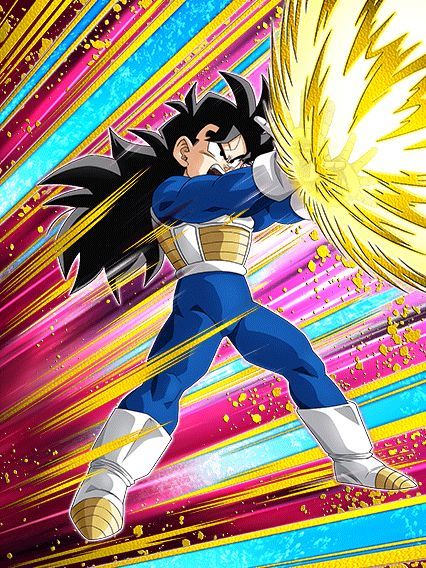
Acho que o Dokkan tem algum vício em fazer Gohans F2Ps de World Tournaments serem úteis.
Esse Gohan tem um suporte quase idêntico ao do Vegetto AGL acima, sendo a única diferença é que os 30% de ATK e DEF são pra Androids/Cell Saga, e os 3% a mais são por Super Class no time
Em geral esse cara até consegue ter uma defesa decente, e tem potencial decente pra Super Battle Roads, já que ele sela o Super Attack do oponente caso tenham mais de 2 inimigos, e caso tenham menos de 2, tem 58% de chance de crítico
O mais legal dele é ele ter defesa ativa caso tenha outro Bond of Master and Disciple no turno, que é bem fácil, então na maioria das vezes vai estar ativa
Além disso, o Super Attack dele dá 50% de ATK e DEF por 6 turnos, nada mal ein
eza da chichi phy
Além de ser a futura esposa do irmão do raditz, ela também tem 2 ataques básicos adicionais.
A Chichi é um card confuso pq ela faz muitas coisas diferentes
Pra começar, ela tem 30% de chance de desvio que só aumenta pra 70% caso estiver com menos de 49% de HP.. ok né
Ela tem 50% de chance de lançar um Super Attack adicional e fica super efetiva caso tenha um aliado ou inimigo com o nome "Goku", que é decente até né
Então ela simplesmente lança 2 ataques básicos adicionais que não tem chance de virarem Supers nem nada, é só isso
E ela lança um Super Attack adicional toda vez que ataca 5 vezes na luta.. uhhhhh..
Ela faz coisas demais e em nada ela acaba sendo boa, se o desvio dela não tivesse uma condição de HP ela seria usável
Mas nesse estado q tá agora? Difícil.
Dokkan Awakenings da Caulifla INT e Kale TEQ
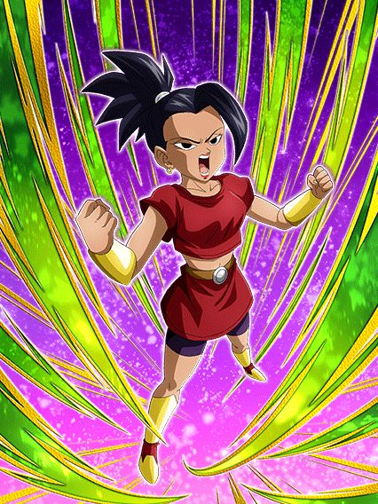 "Mãe, a gente pode ter uma Kale STR e uma Caulifla TEQ?"
"Ora filho, mas não temos isso em casa já?"
A Kale STR e Caulifla TEQ em casa:
Essas duas não ironicamente são uma cópia mais fraca das versões de summon delas, o que é interessante, já que elas não são tão ruins não
A Caulifla INT lança um Super adicional garantido e tem 70% de chance de desvio caso tenha uma Kale no turno (e infelizmente é esse o limite do desvio), e até tem o stack de ATK e DEF no Super Attack igualzinho a versão de summon
Ela builda 60% de ATK e DEF com 3 desvios, e ganha 6% de chance de crítico por Universe 6 no time, bem decente
Lógico, ela é um card desvia-ou-morre, mas ainda sim, se ela desviar, é útil
A Kale TEQ já é um pouco mais fraca, já q ela tem um kit similar a Caulifla no quesito stack e etc, mas ela tem 70% de chance de ter defesa ativa
É.. pelo menos a Caulifla talvez aguente 1 ataque básico e desvie do resto, mas se a defesa ativa da Kale não ativar, é game over meu caro
Certamente não é o pior WT de todos, mas eles realmente tem q parar de colocar isso em aniversários
É só dar as 50 ds de outro jeito ou sei lá..
EZA DO EVOKEN LR RAAAAAAAAAGHHHH
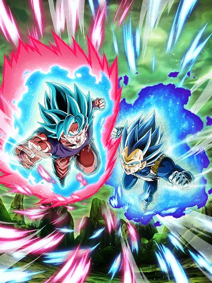
O EZA mais divertido desse aniversário.
Esses caras são simplesmente geniais, eles ajudam o time, não precisam de suporte nem nada pq eles se sustentam sozinhos, e se beneficiam no melhor time do jogo
Pra começo de conversa, agora esses caras mudam orbs pra rainbow caso tenha um aliado Super Heroes no turno, então eles não sofrem mais por Ki e servem de substituto caso você não tenha pego o Gogeta novo
A parte de nuke da passiva deles não foi alterada, então segue sendo 7% de ATK e DEF por orb pega, e considerando oq esses caras fazem, ter mais que isso seria muito desbalanceadoKKKKK
Agora, além de 7% de chance de crítico, cada rainbow orb que você pegar também dá 7% de redução de dano, só pra deixar eles mais tank
E sabe os ataques normais adicionais que ele lançavam por rainbow orb? Agora todos tem 50% de chance de serem Super Attacks, aproveite o balanceamento
Não achou a chance de crítico suficiente? Tudo bem, eles dão crítico garantido se você tiver com 24 de Ki (já falei que eles ganham Ki em dobro por rainbow orb? KKKKKKKKKK)
Talvez você esteja se perguntando sobre a Active Skill deles, e sim, deram um jeito de tornar ela útil.
Caso você caia abaixo de 50% de HP (que é a mesma condição da Active), eles ganham 70% de redução de dano
Vale ressaltar que essa redução só ativa quando eles atacam, então não tente jogar eles no slot 1 pq eles vão morrer, mas ainda sim, pelo menos agora a Active serve pra algo e deixa eles ainda mais quebrados
Eu não preciso nem explicar que esses caras simplesmente incineram qualquer evento q tiver na frente deles, já que possíveis 5 Super Attacks todos com crítico garantido é bem difícil de tankar né
Simplesmente um EZA incrível pra um card lindo e brabo demais, obrigado Dokkan.
GOHAN BEAST LR ELE É JOGÁVEL MEU DEUS SLK SLK RAAAAAAAHHHH 🦅🦅🦅🦅
Ele.. é jogável? ELE É JOGÁVEL???????
Vou ser bem direto: Essa é a análise mais desnecessária desse site inteiro.
O Gohan faz tudo, precisa mesmo explicar?
Pra começar, o Gohan é líder pra Super Heroes, automaticamente transformando a categoria na melhor do jogo inteiro, além de também liderar Bond of Master and Disciple e Miraculous Awakening, simplesmente uma das melhores Leader Skills de todas
Por sinal, esse cara é um card Dokkan Original obviamente, e ele tá com animações muito interessantes, incluindo uma referência genial ao Gohan do filme do Boujack
Então uhh.. será que já posso falar que ele é invencível por 5 turnos?
O Gohan tem uma animação de intro linda que dá 40% de chance de crítico e 40% de redução de dano pra ele por 5 turnos, e isso é o começo da coisa..
Já que é um Gohan, é óbvio q esse cara tem defesa ativa, sendo ela incondicionalKKKKKK balanceado como sempre
Se o Gohan tiver com 24 de Ki, ele ganha 50% de ATK, 80% de DEF, e 20% de ambos crítico e redução de dano, somando no total 60% de redução de dano e defesa ativa turno 1, esse cara simplesmente não vai levar dano
Não achou suficiente? Ok.
Caso o Gohan leve 8 ataques ou ataque 5 vezes, ele ganha MAIS 20% de chance de crítico e redução de dano
Se você conseguir fazer isso enquanto a intro dele tá ativa, o cara tem 80% de redução de dano com a defesa ativa KKKKKKKKKKKKKK
Por sinal, esse cara foi feito pra completamente humilhar o fraudehan, já que, enquanto aquele card miserável sofre por Ki a todo momento, o Beast tem praticamente Ki infinito
Além de ele ganhar o dobro de Ki por todas orbs, ele ainda tem a mecânica que o Piccolo LR do filme tem, só que melhor, já que ele dá 3 de Ki pra todos aliados depois de levar um golpe, e considerando que esse cara sempre fica no slot 1, fica fácil né
Acho que falei o suficiente da capacidade defensiva desse cara.. então bora falar do dano
Além dos 3 de Ki, o Gohan também lança um Super Attack adicional depois de levar 1 ataque
O Gohan também stacka 50% de ATK no Ultra Super Attack dele, o que só deixa ele cada vez mais forte quanto mais a luta demorar KKKKKKKKKK
E agora, acho que a minha mecânica favorita do Gohan
Eu gosto de dizer que essa mecânica faz do Gohan um "personagem com dano potencial infinito", por que ele simplesmente ganha 20% de ATK no turno pela quantidade de ataques que ele levar, e isso não tem limites
Quanto mais ataques um boss dar no turno, maior vai ser o dano dele, e com ele stackando, isso só fica mais absurdo
E já que eu falei dos supers do Gohan, ele tem um Unit Ultra Super Attack caso tenha um Piccolo no turno, fazendo o Makankosappo pai e filho mestre e discípulo, muito brabo
E o melhor disso é que não é obrigatório sempre pegar esse Super, já que a única diferença que ele tem do normal é quebrar 1 ação do inimigo e dar 20% de chance de critico pra todos aliados no turno, então é útil, mas não obrigatório.
Espero que você esteja com vontade de ler mais, pq tem mais.
Agora é hora da Active Skill do Gohan que, acredite, é a coisa mais quebrada que ele tem, acima de tudo já mencionado
O Gohan aumenta a própria defesa em 158% o que é ABSURDAMENTE RIDÍCULO de forte, dá crítico garantido, tem 24 de Ki e atraí todos os ataques pra ele
Lembra da parada de "ganhar 20% de ATK por golpe levado no turno"? ENTÃO NÉ
A estratégia é deixar esse cara no slot 3 quando usar a Active, assim ele vai levar o máximo de golpes possíveis no turno e meter um super de 40 milhões ou algo assim
E quer saber qual a condição dessa bomba?
Simplesmente LEVE 1 ATAQUE, SIM, É SÓ ISSO
Não tem nem oq dizer, o Gohan é completamente invencível nesse turno, protege o time, e vira uma bomba termonuclear
Não só isso, mas esse cara também leva o prêmio de "Active Skill mais curta do jogo inteiro"
Se transformar o Piccolo LR em Laranja é o botão de ganhar a partida, eu não consigo nem pensar noq essa Active é
FATO: Essa active é tão absurda que até eu me sinto protegido pelo Gohan.
Vale lembrar que essa Active sofre de um problema similar ao do Gogeta Blue PHY, já que a atração de ataques não funciona em ataques em área
E algo que acaba te complicando, é o fato de que o Gohan está tankando tudo e não desviando, o que significa que caso o boss tenha algum efeito de selamento ou stun no Super Attack, a sua nuke do Gohan vai infelizmente de comes e bebes
Mas isso não impede o Gohan de ser o melhor card do jogo inteiro, e em geral, um dos personagens mais fortes da história do Dokkan inteiro
Pra ter um contexto, algumas pessoas tavam comparando o lançamento do Beast ao Gogeta STR do primeiro aniversário que era obrigatório ter na sua conta (na minha opinião, o Gogeta STR foi mais quebrado na época dele, mas eu não estava lá pra comprovar essa informação)
Simplesmente o homem, o mito, e a lenda.
Kuririn e 18 AGL
FIZERAM OUTRO CARD SECUNDÁRIO BOM????
Esses caras tem o simples objetivo de serem suporte pra Super Heroes, e que suporte interessante ein
Se teu HP estiver acima de 50% no começo do turno, eles dão 50% de ATK e DEF pra Super Heroes por 2 turnos, o que é obviamente muito absurdo
Bom, eles são o clássico "suporte desvia-ou-morre". Como tá sua sorte ein?
Eles tem 30% de chance de desviar, e caso tenha um aliado Super Heroes no turno, a chance aumenta pra 60% e eles ganham 30% de chance de crítico
Eles buildam 90% de ATK e DEF com 3 desvios, e em geral é só isso que eles vão ter mesmo
Eles também tem 180% de ATK e DEF a mais antes de levarem um ataque, ou seja, caso você leve um tapa do boss, não vai te evaporar na hora provavelmente (o próximo tapa vai com certeza xd)
Eles são simples, bem diretos ao ponto e basicamente uma versão mais forte da Pan INT do filme
GAMMAS LR CARNIVAL
O card com animações lindas que você vê 1 única vez na luta.
Os Gammas são o líder e suporte definitivo pra Super Heroes, já que eles dão 50% de ATK e DEF pra categoria, além de o suporte também ir pra Special Pose e Joined Forces, então eles felizmente funcionam em múltiplos times
Bom, o grande papel dos Gammas se resume a você pegar 2 orbs STR, AGL ou INT pra ativar a Standby e outras mecânicas deles
Cada orb INT pego te dá 30% de chance de crítico e 1 Super Attack adicional (os Supers são limitados a apenas 2 por turno)
E cada orb AGL ou STR pego te dá 12% de chance de crítico e 1 adicional com 70% de chance de ser um Super Attack (mesmo limite de só 2 por turno)
Então, a sua prioridade são orbs INT, e caso não consiga, pegue o máximo de AGL ou STR que conseguir, já que depois de atacar 3 vezes (graças a Deus não precisam ser 3 Super Attacks), eles ganham mais ATK e DEF e 30% de redução de dano
Atacar 3 vezes também é a condição da Standby Skill (ou caso você caia abaixo de 70% de HP), e essa é uma ótima condição já que simplesmente pegando 2 orbs de alguma dessas cores já permite eles usarem imediatamente a standby
Sim, as animações desses caras são maneiras e é muito bom ver os Gammas lutando juntos, mas em eventos difíceis essa redução de dano não vai tankar
Até pq, caso você caia abaixo de 30% de HP de algum jeito, eles perdem 125% de ATK e DEF e isso obviamente quebra eles, então quando a Standby estiver disponível, considere já usar ela pra garantir que tudo vá conforme os planos.
Entre o LR Carnival super importante e a Support Memory genérica, tente adivinhar qual adaptou a morte do Gamma 2.
A grande diferença da forma Pré-Standby deles pra essa é que eles não ganham mais 30% de redução de dano atacando, já que agora eles tem 50% de redução permanente
O suporte foi mantido o mesmo, os adicionais ligados aos orbs foram mantidos também, tudo igual
A Standby em si deles dura 4 turnos e ganha 1 carga por ataques feitos por aliados
E acredite, é bem quebrado, já que cada carga aumenta o ATK em 100%, então uns 10 ataques bem básicos resultam em 1000% de ATK no ataque final KKKKKKKKKK
É bem interessante por que esses caras tem o Evoken LR no time, e eles tem muito adicional, então realmente o ataque fica estupidamente forte, ainda mais se critar
Enfim, assim que disponível, use o Core Breaker e veja o Gamma 2 cozinhar o inimigo do jeito mais emocionante possível
2 coisas que vale mencionar é que a OST do Core Breaker é bem diferente doq imaginávamos, já que é na verdade uma OST estilo "França" ou sei lá
Parece estranha mas você se acostuma depois
E um extra é que a dublagem do Gamma 2 no Core Breaker ficou impecável no Global, me impressionou demais.
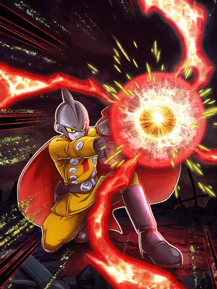
Bro virou um card top 3 no jogo inteiro e achou que ninguém ia perceber 💀
O Gamma 1 vira um personagem extremamente desbalanceado, já que ele pode simplesmente chegar a 90% de redução de danoKKKKKKKK
Basicamente, enquanto teu HP estiver acima de 30% (a esse ponto da luta, é quase impossível ficar abaixo disso), o Gamma 1 tem 30% de redução de dano e 300% de ATK e DEF, e ganha +20% de chance de crítico e 10% de redução de dano por orb INT ou STR pega
Infelizmente não tem como ir além de 90% de redução, mas o crítico pode sim ficar garantido
Por sinal, sim, orbs AGL não contam mais pro Gamma 1 pq o Gamma 2 tá morto, então pra compensar isso, ele muda orbs AGL pra INT
Além disso, ele lança um Super Attack adicional garantido, mas só 1, e não tem mais haver com orbs, é só garantido mesmo
E aí vem a parada mais quebrada desse cara (sim, 90% de redução de dano não é o mais forte q esse mano tem)
O suporte de 50% de ATK e DEF mencionado no começo continua aqui igual, mas agora o Gamma 1 tem um efeito adicional..
O Ultra Super Attack do Gamma 1 dá 50% de DEF pra todos aliados Super Class por 2 turnos
Então, sim, o o Gamma 1 tá sendo um suporte de DEF absurdamente quebrado por múltiplos turnos, ajudando o time ainda mais
Apesar de obviamente os Gammas perderem o holofote por causa do Beast, eles são um personagem absurdamente quebrado se você conseguir usar a Standby deles logo no início, pq quando você chega nesse Gamma 1, vai ficando cada vez mais impossível morrer na luta.
O EZA DO GOKU MUI LR GRAAAAAAAAHHHHHH
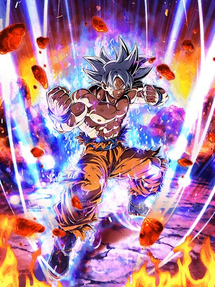
Tiveram q dar desvio garantido pro cara parar de levar todos os Super Attacks na partida.
Ambos EZAs do Sexto Aniversário ficaram exatamente poderosos, é insano
E desde o lançamento deles no JP, eles não envelheceram nada agora que tão chegando no global, só coisa boa.
Enfim, o Goku MUI está absurdo de forte
Pra começar, no primeiro turno de aparição dele ele tem desvio garantido, então já começou muito bem
Os míseros 30% de DEF q ele ganhava com 1 desvio agora viraram uma buildagem muito mais decente de 150% de DEF com 5 desvios, além de cada desvio buildar até 10 de Ki pro cara
Como o desvio é garantido no primeiro turno, é bom tornar a sua prioridade buildar isso né
Falando de desvio ainda, a famigerada 70% de chance de desvio foi aumentada pra 77%, e com um extra..
Cada desvio feito no turno aumenta sua chance de desvio naquele turno em 7%, ou seja, caso você desvie de 4 ataques, a chance vai chegar em 105%, oq é obviamente desvio garantido (E ainda assim o Goku ainda vai dar um jeito de levar o primeiro Super Attack que vier, confia)
Bom, saindo do desvio, temos o dano completamente absurdo desse personagem
Pra começar, o Ultra Super Attack desse cara aumenta o ATK em 100% e ainda dá 7% de chance de crítico pra todos aliados por 2 turnos, muito balanceado
E ele tem 77% de chance de lançar um Super Attack adicional, muito aceitável
Além disso, ele ganha +77% de ATK e dá crítico garantido caso esteja com 24 de Ki ou use a Active Skill
Vale lembrar que apesar do critico garantido, esse cara e o Vegeta aumentam a própria chance de crítico em 50% em ambos Supers, então se ainda assim não critar, sinto muito por você.
E falando da Active, ela não tem nenhum efeito adicional, mas agora é uma bomba nuclear de dano, ficou muito absurda kkkkkk
E agora, a parte mais quebrada: O Revive.
A condição horrivelmente podre que o Goku e o Vegeta tinham foi alterada e faz uma diferença tremenda
O Goku tem o Revive mais fácil de ativar do jogo inteiro, e o Vegeta tem o Revive mais confiável, simplesmente genial
Bom, sobre o Revive em si, a condição de estar abaixo de 50% de HP e levar 3 ataques foi substituída por simplesmente estar abaixo de 77% de HP a qualquer ponto da luta
Isso é MUITO absurdo, já que é uma condição muito fácil considerando que os bosses tão dando muito dano de uma vez só
E se você acha que todo o dano do Goku ainda parece pouco, então fica mais insano, já que após qualquer Revive ser ativado na partida, esse cara ganha +77% de ATK e DEF KKKKKKKKKKKK
Não só isso, mas caso seja ativado o revive do próprio Goku, ele vai ter desvio garantido no turno seguinte, e acredite, um turno de desvio garantido muito longe numa partida é uma completa benção pro time
Em geral, esse cara é simplesmente absurdo, muito dano, crítico garantido, e o desvio que consegue chegar a 100% todo turno, muito forte
Claro, apesar de o Goku conseguir chegar a até 1 milhão de DEF no ápice do ápice, ele ainda é alvo potencial de Super Attacks caso ele não desvie, mesmo que pareça impossível ele levar sequer um golpe.
O EZA DO VEGETA BLUE EVOLUTION LR RAAAAAAAAAAHHH
Fato: 2024 é o ano do Vegeta no Dokkan.
Esse cara no lançamento foi imediatamente o segundo melhor personagem do jogo (perdendo só pro Beast obviamente)
Bom, ele tem diversas similaridades com o Goku MUI AGL, então só bora
Pra começar, o Vegeta tem defesa ativa no primeiro turno dele, similar ao desvio garantido do Goku MUI AGL
E agora ele é uma simples parede, já que a redução de dano podre que ele tinha foi buffada pra níveis absurdos
Os 10% de redução base que ele tinha foram aumentados pra 50%, e ele ainda ganha +10% por golpe que ele levar, chegando ao máximo de 80% de redução de dano. Isso com a defesa ativa que ele tem no primeiro turno faz dele mais tank que o Gohan Beast KKKKKKKKKK
E se na defesa esse cara já brilha muito, ele fica ainda mais insano no ataque
O Vegeta builda 10 de Ki e 120% de ATK e DEF atacando 4 vezes, lança um adicional com 77% de chance de ser um Super Attack, e ainda tem o buff de 77% de ATK e crítico garantido se tiver 24 de Ki, completamente absurdo
E apesar de ele já ser uma parede viva, ele ainda aumenta a DEF em 50% em ambos Super Attacks, chegando em patamares absurdos de defesa
Esse cara no slot 1 fica meio perigoso, mas no slot 2 ou 3 ele é essencialmente invencível, se um boss encostar nele 2 vezes ele não vai mais levar dano
E agora, o Revive desse cara
Como eu mencionei na review do Goku MUI, ele tinha o Revive mais fácil de conseguir, enquanto o Vegeta tem o revive mais confiável
A condição do Vegeta é simplesmente ele levar 5 golpes, e automaticamente fica disponível.
É isso mesmo, sem restrição de HP nem nada
Se um personagem levar hit-kill do boss, você irá reviver do mesmo jeito
Mas claro, a condição tem seus problemas né
Levar 5 golpes usando o time Super Heroes que completamente dilacera os bosses pode ser uma tarefa estranhamente difícil, mas vc vai estar usando esse cara e o Goku MUI no time, então se esse cara não conseguir reviver, o Goku provavelmente vai ajudar com isso
E só pra constar, o Vegeta tem o mesmo buff de 77% de ATK e DEF caso qualquer Revive seja ativado na partida, e caso seja o Revive dele mesmo, ele ganha defesa ativa por mais um turno
Eu acho que ficou óbvio do pq o Vegeta é o n.2 do jogo e pq ele é melhor que o Goku MUI por hora
Não só a capacidade de tankar praticamente tudo faz do Vegeta um card excepcional, mas o Vegeta não possui uma "chance de falha" como o Goku MUI tem
Se você quiser ver o Vegeta falhar em algo, você tem que propositalmente sabotar ele de algum jeito, pq ele não possui praticamente nenhuma falha
A Akatsuki realmente cozinhou TUDO com esses EZAs, facilmente os personagens mais bem-construídos e que vão envelhecer muito bem independente do conteúdo, além de possuírem ZERO restrições, os caras podem ser usados em qualquer time.
EZA do Bills de pijama que tem um nome diferente pq ele tá de pijama F2P
Eu acho esse cara muito maneiro mas ele é um personagem F2P de aniversário, portanto ele tem q ser mid.
Bom, esse personagem acaba sendo bem "ok", sendo em algumas fases um literal card suicida
O Bills não pode atacar antes do turno 5, e nesse período, ele tem 300% de DEF, +50% de DEF por orb pega, e 50% de redução de dano que vai diminuindo em 10% a cada turno
Isso já é problemático, já que hoje em dia 50% de redução de dano não é suficiente, e só vai diminuindo, oq torna ainda pior
Uma coisa legal é que esse cara pelo menos muda orbs PHY pra rainbow.. é alguma coisa né?
Bom, após o turno 5.. o momento card suicida
Então, KKKKKKKKKKK
Ao usar a Active Skill, o Bills acorda e atrai todos os ataques pra ele
O CARD F2P, atrai TODOS OS ATAQUES, e ainda quer TANKAR ELES KKKKKKKKKKKKKKKKKKKKK
É difícil não zuar, mas fazer oq né
Bom, o Bills tem 50% de redução de dano por 1 turno, e caso vc pegue 5 orbs, a redução aumenta pra 80%, o que é bem decente
Um problema do Bills é que a defesa dele não é consideravelmente boa, então mesmo com 80% de redução, ele ainda vai levar um pouquinho de dano dependendo de onde cê levar ele
Claro, eu tou considerando o Bills sendo levado num evento difícil pq algum card tá faltando no time pra fazer missões ou sei lá
Logicamente em um evento feito pra personagens F2P esse cara vai tankar tudo facilmente
Ele builda um total de 77% de ATK e 7 de Ki levando 7 ataques (vai ser fácil de buildar em 1 turno), além de também ganhar 50% de chance de crítico assim que levar o sétimo ataque
Em geral, ele tem animações boas, OST muito braba, e ele tem um kit interessante.. mas depois que a redução de dano dele passa e ele fica só com 30%.. boa sorte tankando alguma coisa meu caro
eza do freeza primeira forma f2p
Temos aqui um bom exemplo de um personagem com scouter que só te indica em que lugar você vai de base.
Esse cara builda 100% de ATK e DEF com 4 ataques (inútil, já que ele não dá dano direito e muito menos tanka)
E pra ajudar na buildagem, ele lança um adicional com 50% de chance de ser um Super Attack caso teu HP esteja acima de 50%, e caso tenha mais de 1 inimigo, ele lança um Super Attack adicional também
E a grande mecânica dele é que ele ganha 50% de ATK e DEF e fica com scouter caso tenha um inimigo Movie Heroes ou Pure Saiyans
Éééééé.... é só isso mesmo
Sem Active Skill, ou redução de dano, ou defesa ativa... nada
Eu acho que não precisa descrever o quão inútil esse cara é, você já deve ter entendido
O EZA DO TIME UNIVERSO 7 LR
As surpresas do aniversário não acabaram ainda pelo jeito.
Esse card simplesmente ficou insano.
Eles são um suporte muito forte pra Representatives of Universe 7 e 1000x melhores que o 17 e 18 INT que lançaram meses atrás
Bom, caso o time tenha pelo menos 5 Reps of Universe 7, esse cara tem 77% de ATK e DEF a mais, e 52% de chance de crítico e também 52% de redução de dano, então eles já começam muito bem
Eles tem um orb change meio zuado que muda orbs aleatoriamente pra rainbow mas só se tu tiver com menos de 77% de HP, bem desnecessário com o Evoken LR no time
Eles ganham mais buffs ainda, e lançam um Super Attack adicional com 22 ou mais de Ki, e acredite, os supers desse cara são insanos
O Ultra Super Attack dá 30% de ATK e DEF pra todos aliados por 2 turnos, e o Super Attack normal dá o mesmo buff só que apenas por 1 turno, então caso esse cara esteja no slot 1, o turno inteiro tem 60% de suporte
Não só isso, mas ele dá mais 7% de ATK e DEF e ganha +7% de chance de crítico por orb rainbow pega
Então na melhor das situações, cê taria dando 95% de ATK e DEF pro turno inteiro, crítico essencialmente garantido e a redução de dano.. será que é suficiente?
EZA extremamente forte, e com muita utilidade pro time
Quem diria que Representatives of Universe 7 viraria meta assim tão rápido..
O EZA DO GOLDEN FREEZA E 17 LR
Esse foi meu primeiro LR, então sinto muito orgulho de eles terem um EZA tão forte.
Bom, esses caras tiveram em geral buffs em coisas que eles já tinham, o que deixou eles muito fortes
Pra começar, a 70% de chance de lançar 2 ataques básicos adicionais foi alterada pra lançarem 2 ataques com 50% de chance de serem Super Attacks, já é um bom começo
Além disso, o 7% de chance de crítico e redução de dano a cada ataque feito no turno foi aumentada pra 17%, o que também fica muito forte
A buildagem de 70% de ATK e DEF que eles tinham foi levemente buffada pra 77% e os ataques necessários pra buildar eles foram diminuídos de 11 vezes pra apenas 7, o que é bem mais tranquilo
Eles também ganharam uma buildagem adicional de 100% de ATK e DEF com 5 Super Attacks feitos, o que é aceitável né
E uma coisinha extra é que caso você esteja abaixo de 77% de HP, eles lançam um Super Attack adicional e tem 70% de chance de crítico
E tirando as coisas extras, tem a coisa engraçada.
No primeiro turno deles, eles tem 50% de redução de dano, oq significa que no primeiro turno eles conseguem chegar a 100% DE REDUÇÃO DE DANO
Então é, deu pra notar o quão tank eles ficam
Num turno básico, contando que você ataque 4 vezes, já são 68% de redução de dano com um valor de DEF bem decente, o que faz desses caras um personagem slot 2 ou 3 extremamente confiável e poderoso, já que o dano deles também tá muito brabo
Isso sem contar a Active Skill que dá 77% de DEF a mais no turno, ainda mais desbalanceada agora.
Em geral, mais um EZA forte pra caramba, e bem defensivo, o que ajuda demais o time Universe Survival Saga
Por sinal, eles não tem nenhuma restrição na passiva, use eles em qualquer time a vontade (mesmo que eles não tenham muitos)
O EZA DO JIREN FULL POWER TEQ
O card que não sabe se fica mais forte ou mais fraco perdendo HP.
Bom, o Jiren nesse momento é um card muito forte mas que não tem um slot 1 pra ajudar ele (o Jiren carnival não lançou no momento q ele ganhou EZA)
E esse cara é realmente bem absurdo, apesar de ter um kit bem simples
O Jiren tem defesa ativa e 100% de ATK e DEF caso seu HP esteja acima de 40%, o que é bem tranquilo
Caso vc esteja ABAIXO de 40% de HP, o Jiren ganha 200% de ATK e DEF permanentes pro resto da luta, deixando ele estupidamente forte quando vc estiver acima de 40% de novo
Bom, ele geralmente não tem problemas com Ki, mas ele ganha até 11 de Ki só tomando golpes, e como ele tem esse monte de DEF, é bem fácil
Outra coisa que esse cara ganha levando golpes é lançar um Super Attack adicional pro resto da luta depois de levar pelo menos 3 golpes, o que é bem fácil né
Ele sempre é efetivo contra tudo, e caso o inimigo esteja debuffado, ele dá crítico garantido
E pra finalizar, caso vc esteja com 24 de Ki, ele sempre quebra 1 ação do inimigo no turno
Deu pra notar de um jeito bem óbvio que o papel desse cara no time é puro dano, já que caso você consiga todas as condições dele, ele vai virar uma nuke ambulante
EZA forte, mas apesar de tudo, não muito quebrado.
Você chegou ao fim dessa página!
Obrigado por ler tudo, e fica a vontade pra ver outras


")


 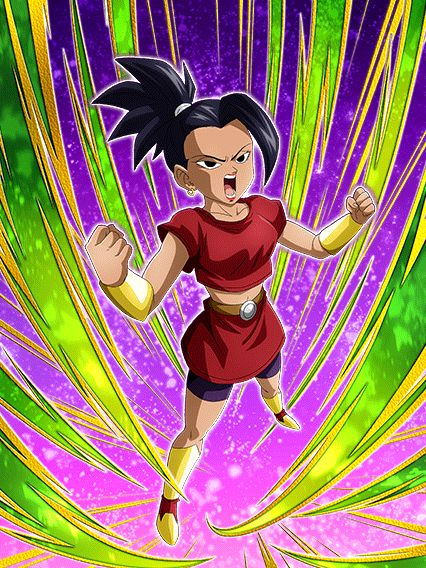
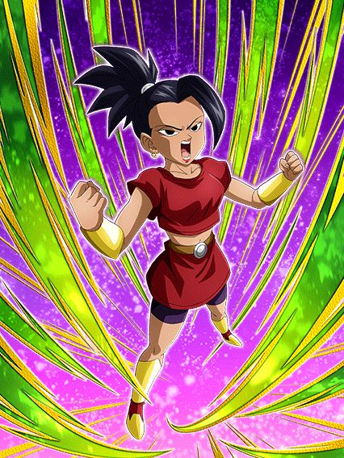 
")